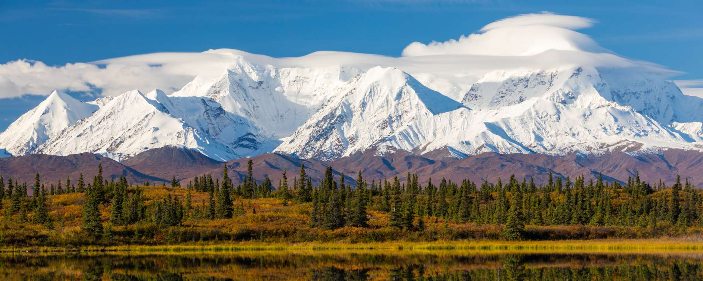
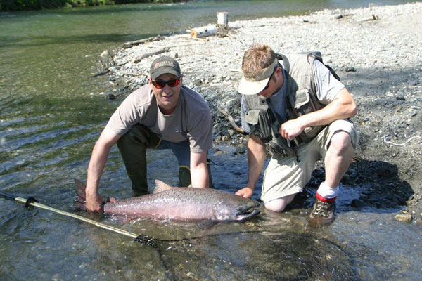
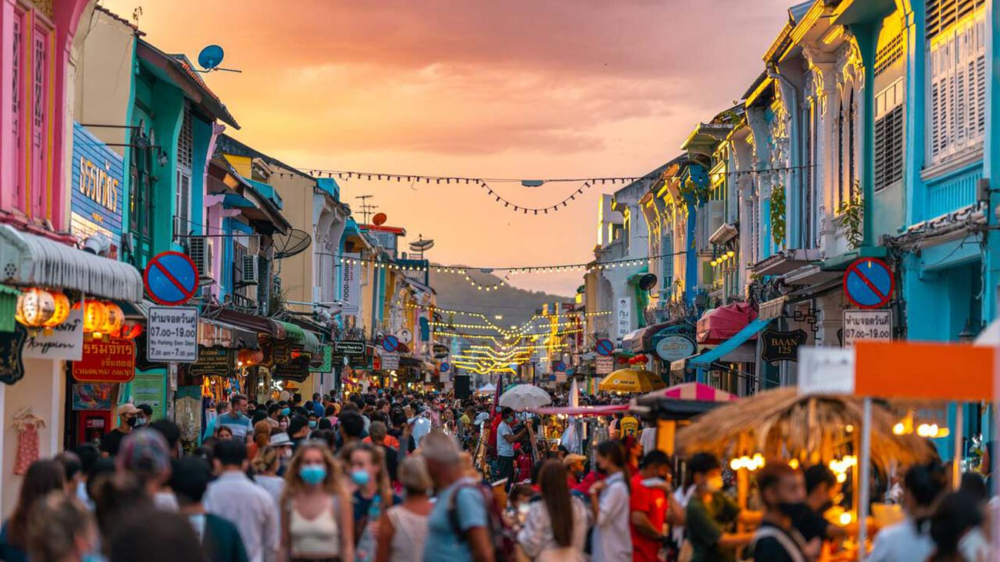
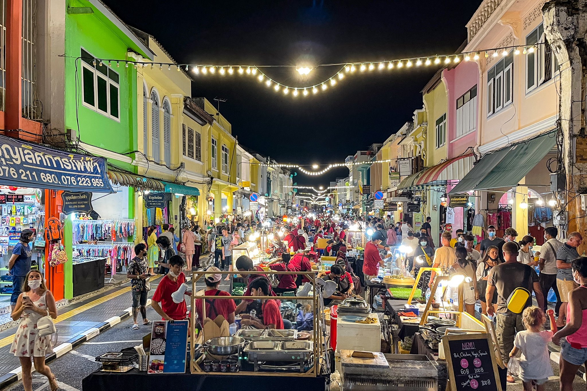
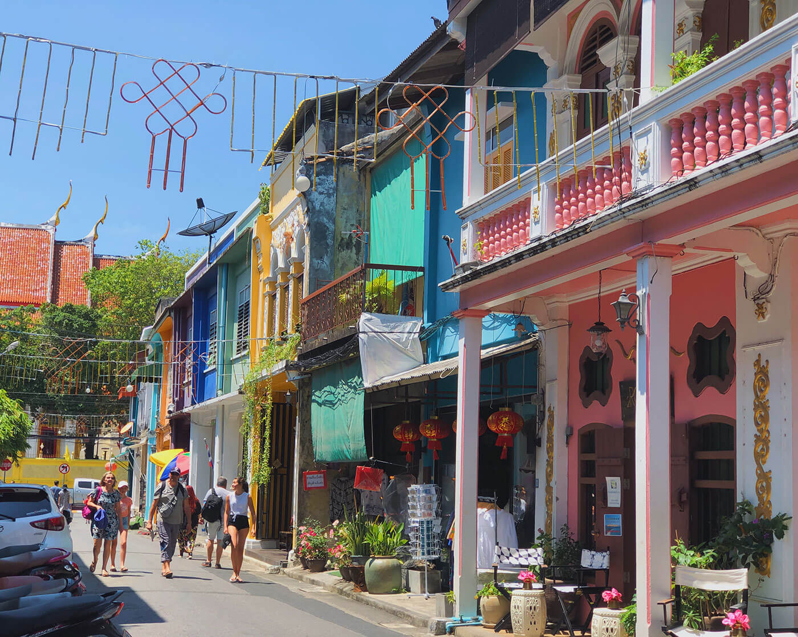

Travel
Yellowstone National Park

Location: Wyoming, United States
Yellowstone National Park is a national park located in the western United States, with parts in Wyoming, Montana and Idaho. It was established by the U.S. Congress and signed into law by President Ulysses S. Grant on March 1, 1872. Yellowstone was the first national park in the U.S. and is also widely held to be the first national park in the world.
Photo Gallery

The drive to Lamar Valley requires some dangerous roads. But the result is amazing sunset views.

Yellowstone is a supervolcano. The caldera is 45 miles across and 30 miles wide. The last eruption was 640,000 years ago.

The sulpher springs are a beautiful sight, but the smell is not so pleasant.
Things to Do
- See the geysers
- See the wildlife
- See the Grand Canyon of Yellowstone
Fairbanks
_0.jpg)
Location: Alaska, United States
Fairbank is a city in the U.S. state of Alaska. It is the largest city in the Interior region of Alaska, the top choice for people to view the world-famous northern lights.
Photo Gallery
The random snow mountain in Fairbanks is a beautiful place to visit in sunny days.
If you are a salmon lover, definitely try fishing by yourself.

Who does not want a hot spring after monnths of busy work or study.
Things to Do
- Fishing
- Hot Srpings
- Spend a night in igloo
Phuket Old Town
Location: Phuket, Thailand
Beyond the glistening sea and towering coconut trees, there is the island’s cultural and historical heritage: Phuket Old Town.
Photo Gallery
Any foodie should come to the night market. The street food is fresh and cheap
Taking a random street walk in a sunny afternoon would be a cure of any stress.
Things to Do
- Enjoy food
- City walk
- Thai massage